Emoji shaping in OpenType¶
This document details the default shaping procedure needed to shape emoji sequences.
Table of Contents
General information¶
The emoji OpenType shaping model is used for correctly displaying sequences from the Emoji block in Unicode as well as for numerous emoji codepoints found in other blocks.
Emoji codepoints originated from a variety of pre-Unicode standards, including mobile-phone carriers in Japan, from typographic characters sets such as Zapf Dingbats and Wingdings, and from various symbols in common usage.
Emoji shaping follows the default OpenType shaping model used for scripts that are considered non-complex from the shaper’s perspective. However, emoji fonts typically use GSUB tables to implement a variety of OpenType smart features, including several classes of ligature, contextual alternates, or variant forms to support emoji sequences.
In addition to standalone image glyphs, emoji shaping is also used to display flag sequences and “keycap” sequences, both of which involve a combination of emoji and non-emoji codepoints in order.
The default emoji glyph for a given codepoint may be substituted by the addition of selectors, modifiers, or joiners after the emoji codepoint.
Many of these emoji sequences carry important semantic meaning, such as specifying gender, skin tone, object colors, and directions. Shaping engines should therefore make a best effort to correctly identify and display these sequences.
Fallback presentation is possible for some emoji sequences by displaying the sequence of default emoji glyphs for the codepoints. For other emoji sequences, however, the most appropriate fallback approach is less clearly defined and may vary between implementations.
Emoji glyphs may be stored in any of several color formats, or in any of the monochrome Bézier formats typically used for standard text codepoints. Correctly retrieving and displaying the glyph data for the format used by the active font is outside the scope of this document.
Note: “shortcut codes” for emoji like
:smile:are text mark-up and are not handled by OpenType shaping. The set of shortcut codes supported by any particular application is specific to that application alone.Text-processing stacks typically support a set of shortcut codes that includes Unicode’s official
Short_Nameproperty from the CLDR database, plus additional short codes, but the shortcut-code mapping is not otherwise linked to Unicode data.
Runs of emoji might be tagged with the <Zsye> or <Zsym> script
subtags, or with the -em-emoji, -em-text, or -em-default locale
extensions. However, these subtags and extensions are primarily
intended to control which presentation form is preferred by the
application, and must not be relied on for the purpose of identifying
emoji.
Terminology¶
A codepoint is considered an emoji only if it has the Emoji
property in the Unicode Character Database (UCD). Although many
codepoints that have this property are pictographic in nature, some
codepoints that are pictographic do not have the Emoji property
(such as most chess, playing-card, and game-piece symbols), and some
codepoints that do have the Emoji property show typographic
characters rather than pictographic images.
All emoji codepoints — as well as several non-emoji codepoints — have
the Extended_Pictographic property. When a non-emoji codepoint has
the Extended_Pictographic property, this indicates that future
revisions of Unicode may incorporate the codepoint in a valid emoji
sequence, or may (for a currently-unassigned codepoint) assign an
emoji character to the codepoint.
The emoji codepoints also include two distinct sets of alphanumeric character codepoints that are used to implement specific substitution sequences.
The regional indicator set includes the 26 lower-case Basic Latin letters (“a” to “z”), which are used to support the predefined set of regional flags. The regional indicator set is found within the Enclosed Alphanumeric Supplement block of Unicode.
The tag character set includes codepoints that correspond to the printable characters in the ASCII set, as well as an “End” control tag. The tag characters are used to support a more general mechanism for local and sub-national flags that are not covered by the predefined regional-indicator flag set. The tag characters set is found within the Tags block of Unicode.
Presentation style describes whether an emoji codepoint is shown in emoji style (for example, with a full-color bitmap or SVG glyph) or text style (such as a monochrome, Bézier glyph). Every emoji codepoint defaults to either emoji-style or text-style presentation.
An emoji codepoint might be followed by a presentation selector. This selector requests that either emoji-style or text-style be used for the preceding emoji codepoint, potentially overriding that codepoint’s default. There are two presentation selectors:
Variation Selector 15(VS15,U+FE0E) requests text presentation style.Variation Selector 16(VS16,U+FE0F) requests emoji presentation style.
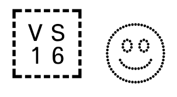
An emoji codepoint might also be followed by an emoji modifier. This modifier requests an alternate version of the emoji glyph. Currently, there are five emoji modifiers defined, all of which are assigned to a skin-tone designation from the Fitzpatrick scale:
U+1F3FB“Light skin tone”U+1F3FC“Medium-light skin tone”U+1F3FD“Medium skin tone”U+1F3FE“Medium-dark skin tone”U+1F3FF“Dark skin tone”
Emoji sequences consist of one or more emoji codepoints, optionally followed by presentation selectors, modifiers, or other special characters. A font can implement custom ligatures for any sequence of emoji. However, Unicode also designates specific sequences that should be supported. These sequences can involve three special non-printing codepoints in addition to the selectors and modifiers mentioned above:
The Combining Enclosing Keycap (CEK,
U+20E3) is used to form keycap sequences corresponding to telephone keypad keys.The Cancel Tag (
U+E007F) is used to form tag-based flag sequences.The Zero-Width Joiner (ZWJ,
U+200D) is used to form emoji sequences for multi-person groups, gendered forms, hair-color variants, and directionality.
Normalization¶
Emoji sequences are not generally affected by Unicode or OpenType normalization. However, Unicode does specify an order to be used when representing ZWJ-using emoji sequences.
The correct order should be:
Base emoji codepoint
Emoji modifier OR Emoji presentation selector
Hair subsequence
Color subsequence
Gender-sign or object subsequence
Directionality indicator
Although this ordering is not designated a Unicode normalization form, shaping engine implementers may find it a useful target if attempting to correct invalid mis-ordered emoji ZWJ sequences.
Shaping engines should also note that the Emoji and
Extended_Pictographic properties may require tracking in any Unicode
normalization routines.
The Emoji property of a codepoint can be unintentionally lost when
certain string transformations are performed. For example, the
upper-case versions of the Circled Latin Letters have the Emoji
property, but the lower-case version of the Circled Latin do
not. Therefore, a case-transformation rule must take care not to
unintentionally break the desired output by losing the property.
The Extended_Pictographic property of a codepoint should be tracked
because it is set on several non-emoji codepoints that may be updated
to have the Emoji property in a future release of Unicode.
Bidirectionality¶
Most emoji sequences are defined to be neutral for the purpose of bidirectionality segmenting and handling.
However, the Regional Indicator flag sequences are defined to be left-to-right only, overriding any levels of bidirectional embedding.
Sequence identification¶
There are six varieties of emoji sequence defined by Unicode:
Presentation sequences
Modifier sequences
Regional Indicator flag sequences
Tag flag sequences
Keycap sequences
Zero-width joiner (ZWJ) sequences
Note: The ZWJ sequence variety incorporates several subsets, but all of the ZWJ sequences are implemented using the same mechanism.
The set of sequences includes various mechanisms defined at different times by either Unicode itself or by legacy encoding standards. In some cases, an older mechanism (such as the Regional Indicator mechanism used for national flags) has been superseded by a newer, more flexible mechanism intended to permit emoji vendors to provide support for a large set of new representations or emoji variants without requiring Unicode to define new codepoints for every possible permutation. Nevertheless, shaping-engine implementers should expect to encounter any or all of the defined sequences.
This set includes the major categories of sequences that shaping engines are likely to encounter and that can convey important contextual information to users. Note, however, that fonts may implement additional sequences via ligature substitution or other existing mechanisms.
Each of the six sequence varieties can also be interpreted as a different module of overall “emoji sequence support” for a shaping-engine implementation. For example, support for Regional Indicator flag sequences is distinct from support for Keycap sequences. For convenience, in this document, the sequence varieties are listed in an order that roughly approximates their complexity, but this ordering is not definitive.
Sequences should be identified by examining the run and matching characters, based on their categorization, using regular expressions.
The following general-purpose identification classes can be used to match emoji sequences in regular expressions.
_emoji_ = `EMOJI`
_modifier_ = "U+1F3FB" | "U+1F3FC" | "U+1F3FD" | "U+1F3FE" | "U+1F3FF"
_presentation_ = `VS15` | `VS16`
_zwj_ = `ZWJ`
_cek_ = `CEK`
_blackflag_ = "U+1F3F4"
_key_ = "#" | "*" | ["0".."9"]
_color_ = "U+2B1B" | "U+2B1C" | "U+1F7E5" | "U+1F7E6" | "U+1F7E7" | "U+1F7E8" | "U+1F7E9" | "U+1F7EA" | "U+1F7EB"
_multipersongroup_ = "U+1F91D" | "U+1F46F" | "U+1F93C" | "U+1F46B" | "U+1F46C" | "U+1F46D" | "U+1F48F" | "U+1F491" | "U+1F46A"
_gendersign_ = "U+2640" | "U+2642"
_genderperson_ = "U+1F468" | "U+1F469" | "U+1F9D1"
_hairstyle_ = "U+1F9B0" | "U+1F9B1" | "U+1F9B2" | "U+1F9B3"
_direction_ = "U+2B05" | "U+27A1"
_regionalindicator_ = ["U+1F1E6".."U+1F1FF"]
_tagchar_ = `TAG_CHARACTER`
_endtag_ = "U+E007F"
The expressions below use state-machine syntax from the Ragel state-machine compiler. The operators represent:
a* = zero or more copies of a
b+ = one or more copies of b
c? = optional instance of c
d{n} = exactly n copies of d
d{,n} = zero to n copies of d
d{n,} = n or more copies of d
d{n,m} = n to m copies of d
!e = not e
^f = character-level not f
g.h = concatenation of g and h
i|j = i or j
( ) = grouping of expression elements
Presentation sequences¶
A presentation sequence is used to request a specific presentation style (“text” or “emoji”), potentially overriding the default presentation style defined for the codepoint by Unicode.
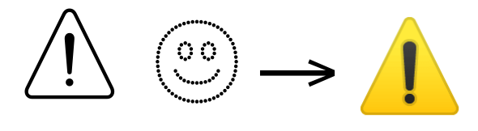
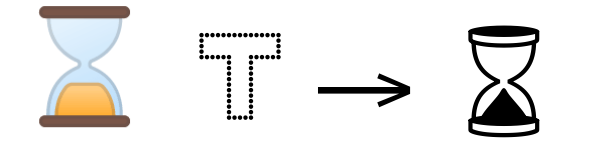
The active emoji font, however, might not contain a glyph for the presentation style requested in the sequence. In particular, it is not common for emoji fonts to include text-presentation glyphs for codepoints that default to the emoji-presentation style.
In these instances, the text rendering stack should select a fallback font that does contain the glyph requested by the presentation sequence. Strategies for identifying appropriate fallback fonts are beyond the scope of this document.
A standalone presentation sequence must match:
_emoji_ _presentation_
Although standalone presentation sequences can occur, note that presentation sequences also occur within longer emoji sequences.
Modifier sequences¶
A modifier sequence is used to request an alternate glyph for an emoji codepoint.
Currently, there are five emoji-modifier codepoints defined by Unicode. Each corresponds to a different human skin-tone based on the Fitzpatrick scale.
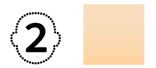
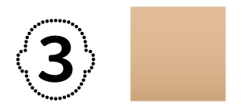
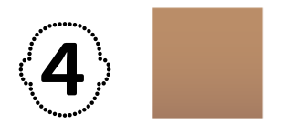
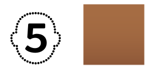
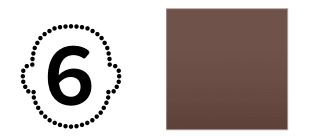
A modifier sequence must match:
_emojimodified_ = _emoji_ _modifier_
Fonts are expected to implement modifier sequences for emoji codepoints that depict a single human being, and are expected not to implement modifier sequences for other emoji codepoints.
Note: Most emoji sequences that depict multiple human beings are modified using the ZWJ mechanisms described later, and not via this mechanism.
However, there are a small number of codepoints that depict groups of human beings in a standalone codepoint and can be modified with a single modifer. They are summarized in the table at the feature interaction in sequences section.
Note, also that there are emoji codepoints depicting beings that are ambiguous in regard to their humanity, such as
U+1F9DB, “Vampire”. Shaping engines should not assume that these codepoints are unable to support a modifier.
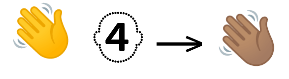
The fallback for a modifier sequence is the generic, unmodified emoji followed by an emoji representing the skin-tone requested.
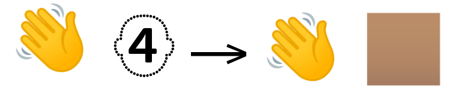
Modifier sequences use emoji presentation style by default, and cannot include a presentation selector. However, an implementation may choose to display text-presentation versions of sequences if emoji presentation style is not possible in the environment.
Although standalone modifier sequences occur, note that modifier sequences can also occur within longer emoji sequences.
Regional Indicator flag sequences¶
A Regional Indicator flag sequence is used to request a flag
emoji. All Regional Indicator flag sequences are two codepoints long,
using codepoints from the REGIONAL_INDICATOR alphabetical set.
A Regional Indicator flag sequence must match:
_regionalindicator_ _regionalindicator_
In addition, the only two-codepoint sequences that are considered
valid Regional Indicator flag sequences are those that correspond to
the unicode_region_subtag field in the CLDR database.
The typical emoji implementation of such a sequence in an image of a flag for the region. However, emoji fonts may choose to represent the region through some other visual means (for example, a regional symbol or map image). Similarly, where there is more than one possible flag for a region, Unicode does not specify any particular visual representation.
Some historical region subtags have been designated as deprecated (for example, “East Germany” and “West Germany”). Emoji fonts are not expected to support these deprecated subtags. However, if they encountered in a text run and are supported in the active font, shaping engines should deal with the situation gracefully, without offering guarantees of support.
Regional Indicator flag sequences use emoji presentation by default, and cannot include a presentation selector. However, an implementation may choose to display text-presentation versions of sequences if emoji presentation style is not possible in the environment.
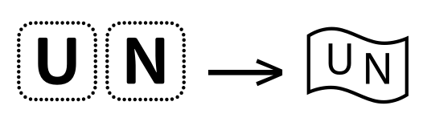
Regional Indicator flag sequences only occur in standalone form.
Note: The Regional Indicator flag sequences are defined to always be interpreted left-to-right (LTR) for the purpose of bidirectionality. This behavior differs from that of other emoji sequences, which are neutral in regard to bidirectionality.
For example, a Regional Indicator sequence “RI_U, RI_A” should result in a flag for Ukraine (“UA”), even if it occurs within a run of right-to-left text. Reversing the sequence to result in a flag for Australia (“AU”) is incorrect.
Tag flag sequences¶
A Tag flag sequence is used to request a flag emoji for any flag not defined by the Regional Indicator flag sequence mechanism.
A Tag flag sequence must match:
_blackflag_ _tagchar_+ _endtag_
The codepoints in the TAG_CHARACTER set come from the “Tags” block
in Unicode. At present, the set of allowable tags is defined as the
range [U+E0020..U+E007E], which includes tags for space, upper- and
lower-case basic Latin alphabetic letters, numerals, and several
symbols. However, Unicode also notes that the upper-case alphabetic
tags are not currently used.
Tag sequences must end with “Cancel Tag” (U+E007F).
Note: Despite the official name “Cancel Tag”, this codepoint terminates valid tag sequences, rather than negating them.
Tag flag sequences only occur in standalone form.
Keycap sequences¶
A Keycap sequence is used to request an emoji that depicts a telephone-keypad button.
A Keycap sequence must match:
_key_ _presentation_ _cek_
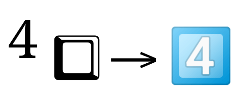
Keycap sequences only occur in standalone form.
ZWJ sequences¶
A Zero-Width Joiner (ZWJ) sequence can be used to request specific variants of an emoji glyph or to request the combined form of a sequence of emoji glyphs.
Because the ZWJ codepoint itself is invisible, users will expect ZWJ sequences to fall back gracefully as sequences of standalone emoji glyphs that convey the original meaning. For example, a ZWJ multi-person group sequence would be rendered as a single multi-person emoji glyph if one is available in the active font, but would fall back to a set of individual-person emoji glyphs.
ZWJ hair sequences¶
A ZWJ hair sequence is used to request a specific hairstyle version of an emoji codepoint that depicts a single human being.
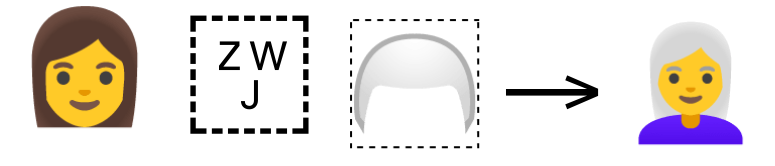
A ZWJ hair sequence must match:
(_emoji_ | _emojimodified_) _zwj_ _hairstyle_
Currently, four hairstyle modifier codepoints are defined:
U+1F9B0“Red or ginger hair”U+1F9B1“Curly hair”U+1F9B2“Bald”U+1F9B3“White hair”
The set of hairstyle sequences allowed has been chosen to enable depictions of distinct properties not easily represented by the defaults of the fallback glyphs. By default, the hairstyle and color on fallback emoji is expected to be nondescript and dark.
Prior to the adoption of the ZWJ-hair-sequence mechanism, a codepoint
specifying “person with blond hair” (U+1F471) already existed;
therefore “blond” was not included in the set of supported hairstyle
versions.
ZWJ gendered person sequences¶
A ZWJ gendered person sequence is used to request a specific-gendered version of an emoji codepoint that depicts a single human being.
Each ZWJ gendered person sequence is composed of an emoji that depicts
a human by default, followed by ZWJ, followed by a gender symbol,
followed by _VS16_.
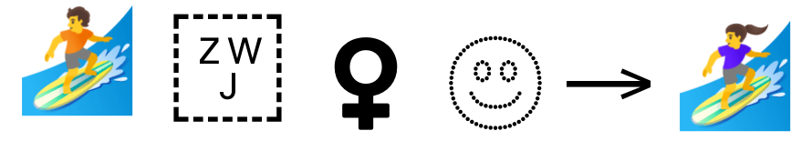
The fallback for a ZWJ gendered person sequence is a generic “person” emoji followed by a gender symbol.
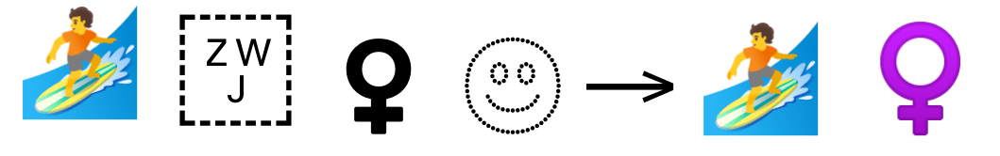
A ZWJ gendered person sequence must match:
(_emoji_ | _emojimodified_) _zwj_ _gendersign_ _VS16_
A small number of emoji codepoints are defined to show a single human being with a fixed gender. These codepoints cannot have their apparent gender modified using the ZWJ gendered person mechanism.
Currently, this list of codepoints includes those in the table below:
Emoji codepoint |
Gender |
|---|---|
|
Female |
|
Male |
|
Female |
|
Male |
|
Female |
|
Male |
|
Female |
|
Male |
|
Female |
|
Male |
|
Female |
|
Male |
|
Female |
|
Female |
|
Female |
However, the list may be updated in subsequent revisions of Unicode.
In addition, emoji codepoints that depict groups of two or more human beings are handled by other mechanisms, such as the ZWJ multi-person group mechanism, and are documented in the corresponding section.
Note: The ZWJ gendered person sequence is not to be confused with the ZWJ role sequence.
In effect, both sequence types can be used to depict a human being performing a task or activity, and can be used to request a specific gender for the human being depicted.
However, all of the codepoints covered by the ZWJ gendered person sequences are emoji that show a human being by default, whereas the codepoints covered by the ZWJ role sequences begin with a generic human-being emoji and append a symbol or object emoji.
ZWJ multi-person group sequences¶
A ZWJ multi-person group sequence is used to request a multi-person emoji glyph. The fallback for a ZWJ multi-person group sequence is a sequence of individual-person emoji glyphs.
A ZWJ multi-person group sequence must match:
(_emoji_ | _emojimodified_) (_zwj_ (_emoji_ | _emojimodified_) _presentation_? ){1,3}
Only a fixed number of such multi-person group sequences is defined. Some of the sequences make use of specific codepoints (such as “Heavy Black Heart” or “Kiss Mark”).
The currently supported configurations for multi-person group emoji sequences are:
Couple with heart
Couple in kiss
Couple holding hands
Family
Shaking hands
A potential source of confusion for these sequences is that some of them appear to duplicate the content of an existing emoji codepoint, but the existing emoji codepoint is typically not involved in forming the corresponding ZWJ multi-person group sequence.
Specifically, there are standalone emoji codepoints for “Kiss”
(U+1F48F), two people holding hands (in three permutations:
U+1F46B, U+1F46C, and U+1F46D), “Family” (U+1F46A), and
“Handshake” (U+1F91D). The details of each of these codepoints in
relation to the corresponding conceptually-similar ZWJ multi-person
group sequence are noted below.
Each of the specific ZWJ multi-person group sequences has a precise definition.
The “Couple with heart” sequence is composed of “Person,ZWJ,Heavy_Black_Heart,VS16,ZWJ,Person”, and must match:
(_emoji_ | _emojimodified_) _zwj_ `U+2764` _VS16_ _zwj_ (_emoji_ | _emojimodified_)
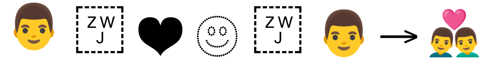
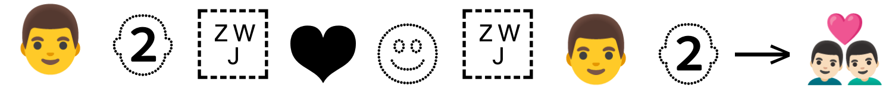
The “Couple in kiss” sequence is composed of “Person,ZWJ,Heavy_Black_Heart,VS16,ZWJ,Kiss_Mark,ZWJ,Person”, and must match:
(_emoji_ | _emojimodified_) _zwj_ `U+2764` _VS16_ _zwj_ `U+1F48B` _zwj_ (_emoji_ | _emojimodified_)
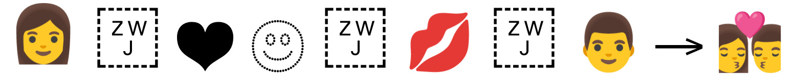
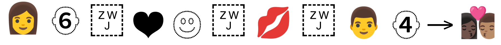
Note: the kiss ZWJ sequence does not involve the “Kiss” codepoint (
U+1F48F).
The “Couple holding hands” sequence is composed of “Person,ZWJ,Handshake,ZWJ,Person”, and must match:
(_emoji_ | _emojimodified_) _zwj_ `U+1F91D` _zwj_ (_emoji_ | _emojimodified_)
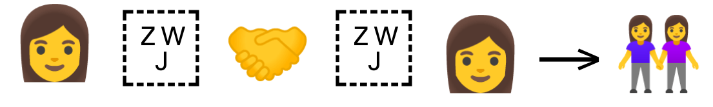
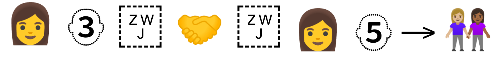
Note: the couple-holding-hands ZWJ sequence does not involve any of the “Man and woman holding hands” (
U+1F46B), “Two men holding hands” (U+1F46C), or “Two women holding hands” (U+1F46D) codepoints.
The “Family” sequence is composed of two-to-four individual “Person” subsequences, each separated by a ZWJ. Furthermore, the “Person” subsequences must be sorted so that all adult subsequences precede all child subsequences. A “Family” subsequence must match:
(_emoji_ | _emojimodified_) (_zwj_ (_emoji_ | _emojimodified_) ){1,3}
Note: The ZWJ “Family” sequence is defined to support modifiers on each individual human-codepoint component of the sequence, but these modified “Family” sequences are not currently included in the Recommended For General Interchange (RGI) emoji set, due to the number of permutations that would be added to the RGI set as a result.
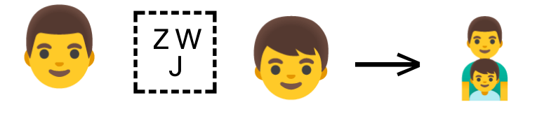
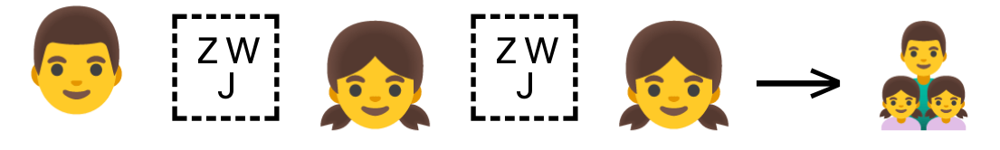

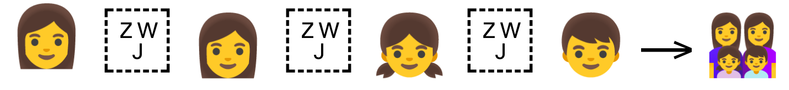
Note: the family ZWJ sequence does not involve the “Family” codepoint (
U+1F46A).
The “Shaking hands” sequence is composed of two “Hand” subsequences separated by a ZWJ, and must match:
`U+1FAF1` _modifier_ _zwj_ `U+1FAF2` _modifier_
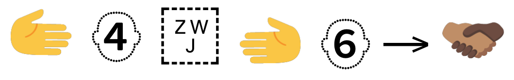
Note: the ZWJ “Shaking hands” sequence does not involve the “Handshake” codepoint (
U+1F91D), although the “Handshake” codepoint itself can be followed by a single modifier codepoint that, for legacy reasons, serves to alter the skin tone of both of the hands depicted in the handshake.However, the “Handshake” codepoint is utilized in the multi-person group sequence for “Couple holding hands”.
ZWJ role sequences¶
A ZWJ role (or profession) sequence is used to request an emoji
depicting a human being performing a task or job. Role sequences are
composed of a codepoint representing a human, followed by ZWJ,
followed by an emoji depicting an object or symbol that references the
desired profession or role.
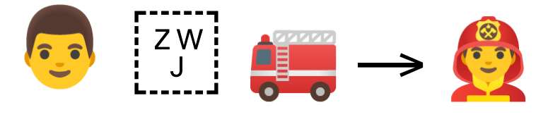
Optionally, the sequence can be further updated by requesting a
skin-tone modifier appended to the _genderperson_ element.

In some cases, the object or symbol depicted by the standalone emoji
will not be shown in the substituted emoji resulting from the
sequence. For example, the “factory” codepoint (U+1F3ED) depicts a
building in its standalone emoji, but the “factory worker” sequence
depicts a human being outfitted for factory work, rather than
depicting a combination of the human being and the factory building.
In addition, some of the supported “role” codepoints do not use emoji presentation by default; for those codepoints, the emoji will be followed by a presentation selector.
The fallback for a ZWJ role sequence is a generic “person” emoji followed by the emoji symbolizing the task or job.
A ZWJ role sequence must match:
_genderperson_ _modifier_? _zwj_ _emoji_ _presentation_?
Note: The ZWJ role sequence is not to be confused with the ZWJ gendered person sequence.
In effect, both sequence types can be used to depict a human being performing a task or activity, and can be used to request a specific gender for the human being depicted.
However, all of the codepoints covered by the ZWJ gendered person sequences are emoji that show a human being by default, whereas the codepoints covered by the ZWJ role sequences begin with a generic human-being emoji and append a symbol or object emoji.
ZWJ color sequences¶
A ZWJ color sequence is used to request a version of an emoji codepoint depicting the base object in a specific color.
A ZWJ color sequence must match:
_emoji_ _zwj_ _color_ _presentation_
Currently, nine codepoints are defined, each of which (in isolation) depicts a large square filled with the color in question.
U+2B1B- “Black Large Square”U+2B1C- “White Large Square”U+1F7E5- “Large Red Square”U+1F7E6- “Large Blue Square”U+1F7E7- “Large Orange Square”U+1F7E8- “Large Yellow Square”U+1F7E9- “Large Green Square”U+1F7EA- “Large Purple Square”U+1F7EB- “Large Brown Square”
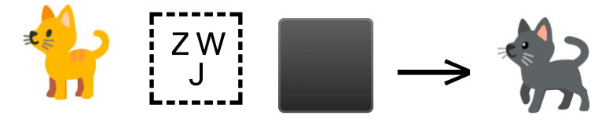
The fallback for a ZWJ color sequence is the default emoji followed by the default emoji for the color codepoint (that is, the color square).
ZWJ directionality sequences¶
A ZWJ directionality sequence is used to request a version of an emoji codepoint facing a specific cardinal direction.
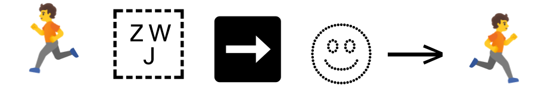
A ZWJ directionality sequence must match:
_emoji_ _zwj_ _direction_ _presentation_
ZWJ additional sequences¶
In addition to the above ZWJ sequence categories, there are 13 standalone, but uncategorized, ZWJ sequences defined in Unicode.
“Heart on fire”
“Mending heart”
“transgender flag”
“Rainbow flag”
“Pirate flag”
“Service dog”
“Polar bear”
“Eye in speech bubble”
“Face exhaling”
“Face with spiral eyes”
“Face in clouds”
“Mx Claus”
“Black cat”

These sequences currently match:
_emoji_ _presentation_? _zwj_ _emoji_ _presentation_?
Note that the “Black cat” sequence, although it appears on this list of additional ZWJ sequences, has subsequently been generalized to the ZWJ color sequence mechanism.
Other sequences and ligatures¶
Emoji fonts may include support for additional variants and sequences. For example, an emoji font might implement support for “keycap”-style emoji for alphabetical characters in addition to the numbers and symbols defined above.
Emoji fonts may also include many-to-one emoji substitutions that do not fit into any of the above sequence varieties and, instead, behave more like ligatures. For example, the sequence “Ice Cream, Banana” might be substituted with a “banana split” emoji.
Any such substitutions are included by the emoji font vendor at their own discretion, with the understanding that fallback behavior is unpredictable.
In all such cases, the shaping engine can make a best-effort attempt to support the sequences, but is not obligated to provide any guarantees as to their correctness.
Feature interaction in sequences¶
As is noted in the descriptions of ZWJ gendered-person sequences and ZWJ multi-person group sequences, there is potential for confusion wherever standalone emoji codepoints and emoji sequences overlap in meaning.
This potential for confusion is compounded by the fact that the skin-tone modifier mechanism and the ZWJ gendered person mechanism interact differently with standalone emoji codepoints and with emoji sequences.
In particular, for several of the standalone emoji codepoints, a single skin-tone modifier is permitted, which is defined to modify both of the human beings depicted in the emoji. For other standalone emoji codepoints, only a single gender designator ZWJ gendered-person subsequence is allowed to be appended to the codepoint, and the gender designator is defined to modify both of the human beings depicted in the emoji.
The permitted combinations are summarized in the following table:
Type |
Emoji |
Skin-tone-modifier |
Gender depicted |
|---|---|---|---|
Standalone |
“Handshake” |
only one supported |
not supported |
Standalone |
“Woman with bunny ears” |
not supported |
only one supported |
Standalone |
“Wrestlers” |
not supported |
only one supported |
Standalone |
“Man and woman holding hands” |
only one supported |
not supported |
Standalone |
“Two men holding hands” |
only one supported |
not supported |
Standalone |
“Two women holding hands” |
only one supported |
not supported |
Standalone |
“Kiss” |
only one supported |
not supported |
Standalone |
“Couple with heart” |
only one supported |
not supported |
Standalone |
“Family” |
not supported |
not supported |
Sequence |
“Couple with heart” ZWJ sequence |
supported |
supported |
Sequence |
“Couple in kiss” ZWJ sequence |
supported |
supported |
Sequence |
“Couple holding hands” ZWJ sequence |
supported |
supported |
Sequence |
“Family” ZWJ sequence |
supported |
supported |
Sequence |
“Shaking hands” ZWJ sequence |
required |
not supported |
Emoji sets¶
Unicode defines several lists of emoji codepoints and emoji sequences that constitute the sequences that are expected in general text.
The “Basic emoji” set includes all individual codepoints that can be rendered with the emoji presentation style (including those codepoints that do not default to emoji presentation).
The “Emoji keycap sequence” set includes all possible valid Keycap sequences.
The “RGI emoji modifier sequence”, “RGI emoji flag sequence”, “RGI emoji tag sequence”, and “RGI emoji ZWJ sequence” sets each include only a subset of the possible valid sequences for their respective variety of sequence. These sets are designated as “Recommended for General Interchange” (RGI) to denote that they are in common usage.
Finally, the “RGI emoji set” includes all of the codepoints and
sequences included in the preceding sets. Presence in the RGI emoji
set can be tracked with the RGI_Emoji property in the UCD. Fonts are
not required to implement the entire RGI emoji set, nor any of the
other sets.
The default shaping model¶
Emoji should be shaped using the default shaping model.
Processing a run of text in the default shaping model involves three top-level stages:
Applying the basic substitution features from GSUB
Applying other substitution features from GSUB
Applying the positioning features from GPOS
Emoji sequences as described above will generally be implemented in the active font as a GSUB lookup feature. However, there are no definitively invalid GSUB or GPOS features that must or must not be employed for this purpose.
Consequently, shaping engines should not assume (for example) that emoji sequences will be implemented in any specific feature of GSUB.
A font may also employ contextual features, such as using locl, that
affects the emoji glyph shown, or use GPOS positioning for some emoji
glyphs.
Font substitution for presentation forms¶
Before shaping begins, the rendering engine should analyze the text run and identify presentation forms.
A presentation sequence is used to request a specific presentation style (“text” or “emoji”) for a codepoint, potentially overriding the default presentation style that is defined in Unicode for that codepoint.
Because it is uncommon for a single font to include both an emoji-presentation-style glyph and a text-presentation-style glyph for the same codepoint, handling a presentation sequence might require font substitution.
Note: Strictly speaking, font substitution is not part of the shaping process, and the handling of missing presentation forms might be most easily performed during segmentation of the text stream into runs. However, shaping-engine implementers should be aware that such presentation-sequence substitutions are allowable and handle them gracefully.
1. Applying the basic substitution features from GSUB¶
The basic-substitution stage applies mandatory substitution features using the rules in the font’s GSUB table. In preparation for this stage, glyph sequences should be tagged for possible application of GSUB features.
The order in which these features are applied is not canonical; they should be applied in the order in which they appear in the GSUB table in the font.
locl
ccmp
rlig
An emoji font can implement sequence support through any GSUB feature lookup.
Basic substitution features a common choice for emoji fonts and should be applied at this stage. In particular, GSUB features that are enabled by default and GSUB features that cannot be disabled by application-level user interfaces are common choices in which the active font may implement emoji substitutions.
The locl feature replaces default glyphs with any language-specific
variants, based on examining the language setting of the text run.
Note: Strictly speaking, the use of localized-form substitutions is not part of the shaping process, but of the localization process, and could take place at an earlier point while handling the text run. However, shaping engines are expected to complete the application of the
loclfeature before applying the subsequent GSUB substitutions in the following steps.
In other, non-emoji text runs, the ccmp feature allows a font to
substitute mark-and-base sequences with a pre-composed glyph including
the mark and the base, or to substitute a single glyph into an
equivalent decomposed sequence of glyphs.
If present, these composition and decomposition substitutions must be
performed before applying any other GSUB lookups, because
those lookups may be written to match only the ccmp-substituted
glyphs.
The rlig feature substitutes glyph sequences with mandatory
ligatures. Substitutions made by rlig cannot be disabled by
application-level user interfaces.
The basic substitution features play a relatively more important role
in shaping non-emoji text runs; therefore the shaping engine may
apply some of them (such as locl) them at an earlier stage in the
shaping process. Emoji shaping should be unaffected by this decision.
2. Applying typographic substitution features from GSUB¶
The typographic-substitution phase applies all remaining substitution features using the rules in the font’s GSUB table. In preparation for this stage, glyph sequences should be tagged for possible application of GSUB features.
These substitutions include those features designed to provide typographic consistency and correctness.
The order in which these features are applied is not canonical; they should be applied in the order in which they appear in the GSUB table in the font.
An emoji font can implement sequence support through any GSUB feature lookup. This can include any other substitution feature in the GSUB feature table.
Support for RGI emoji sequences or other emoji sequences defined as
valid in Unicode may be implemented in a feature that are enabled by
default and cannot be disabled by application-level user interfaces,
such as the rlig feature (for “required ligatures”).
However, emoji fonts may also include support for emoji sequences in
GSUB features that can be disabled by application-level user
interfaces, such as the liga feature (for standard ligatures). Emoji
sequences may also be implemented in features that are disabled by
default, such as the dlig feature (for “discretionary ligatures”).
An emoji font might also implement support for emoji sequences through
the use of multiple features. For example, RGI emoji sequences or
other emoji sequences defined as valid in Unicode may be implemented
in rlig, with custom sequences implemented in liga.
3. Applying the positioning features from GPOS¶
The positioning stage adjusts the positions of mark and base glyphs. In preparation for this stage, glyph sequences should be tagged for possible application of GPOS features.
The order in which these features are applied is not canonical; they should be applied in the order in which they appear in the GSUB table in the font.
In general, all emoji glyphs in a given font are expected to be approximately equal in height and width, and the usage of GPOS positioning for emoji is uncommon.
However, some emoji glyphs might be narrower or wider than average by the nature of the image itself (for example, certain national flags are narrower or wider than others), and there may be situations in which the active font alters the default position of an emoji glyph to achieve a consistent alignment, spacing, or appearance.
Therefore, shaping engines should make no assumptions about the presence or absence of GPOS features for emoji runs, and should apply the features if present.